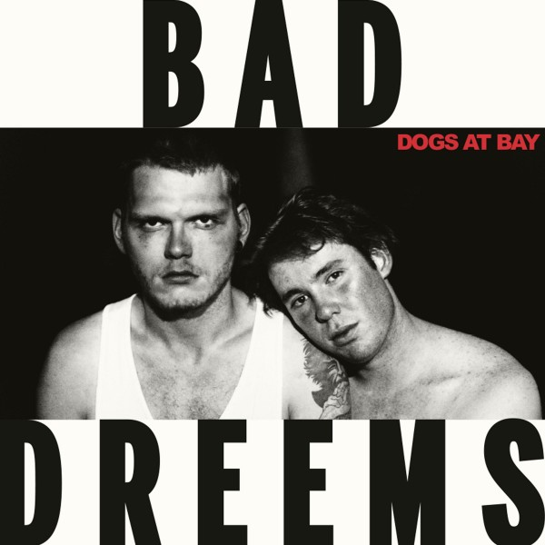
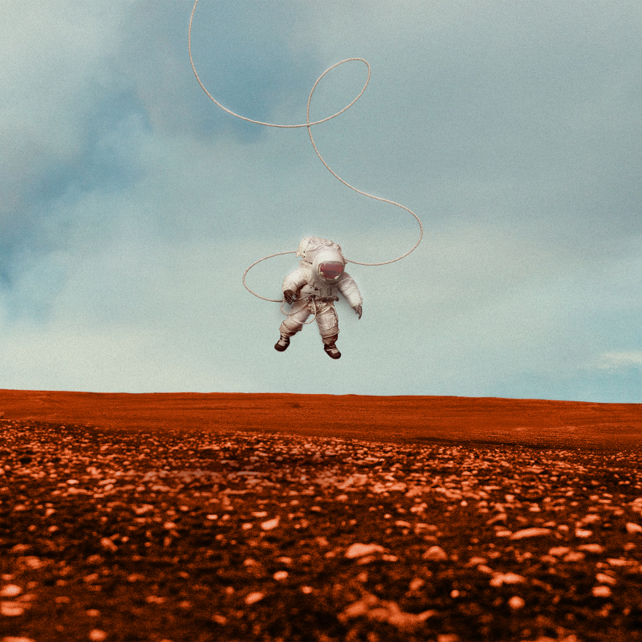
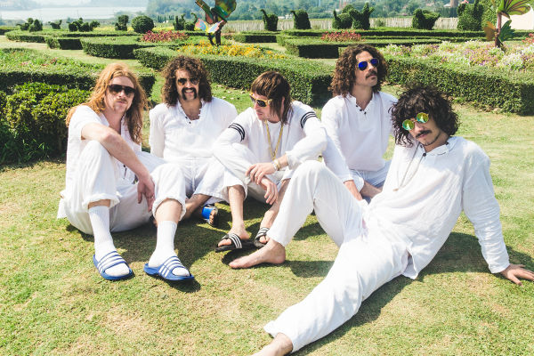
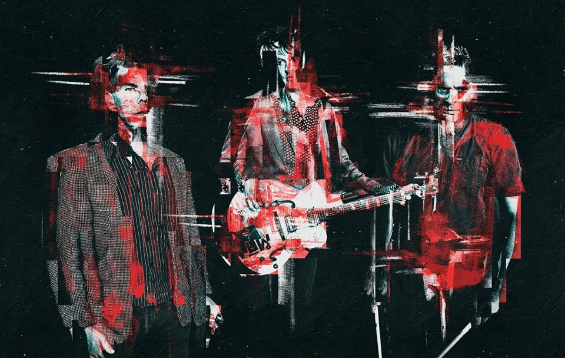
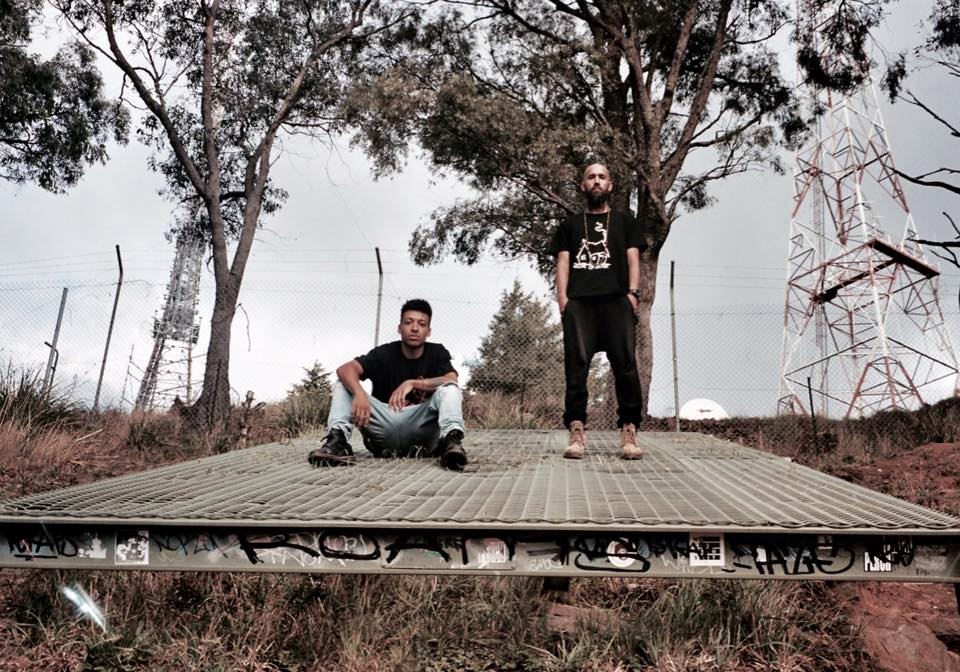

HIGH ROTATIONS
REVIEWS
LATEST
IN DEPTH
HIGH ROTATION
ABOUT
Violent Soho
WACO

Bad//Dreems
Dogs At Bay

British India
Nothing Touches Me
Catfish And The Bottlemen
announce sophomore
album 'The Ride'
23 March 2016

Sticky Fingers are back in
style with swaggering new
single
Outcast At Last
22 March 2016
Thom Yorke teams up with
Mark Pritchard on new song
Beautiful People
22 March 2016

The Living End announce a
triple threat: new album,
new single, new tour
21 March 2016

Remi drops new single
For
Good
with a corresponding
national tour
15 March 2016
The Living End have hit the
ground running with
their new song
Monkey
15 March 2016